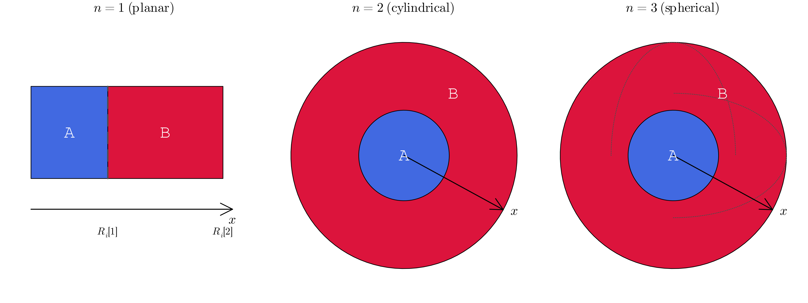
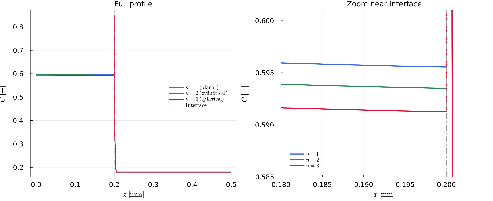

Numerical Approach
The moving interface is tracked explicitly rather than fixed in space. This page covers the governing equation and the discretization; for the equations that close the system at the domain edges and at the interface, see Boundary Conditions.
Governing equation
Each phase satisfies a diffusion equation, generalized to planar, cylindrical, or spherical geometry through the geometry exponent n:
\[\frac{\partial C}{\partial t} = \frac{1}{x^{n-1}}\frac{\partial}{\partial x}\left(x^{n-1} D \frac{\partial C}{\partial x}\right), \qquad n \in \{1, 2, 3\}\]
with n = 1 planar, n = 2 cylindrical, and n = 3 spherical (see n in Quick Reference). D is the diffusion coefficient of that phase — constant, or evaluated from an Arrhenius law (see below). The left and right phases each solve this equation on their own grid, with their own D, coupled only through the interface conditions (Boundary Conditions).
x is always the radial/planar coordinate measured from the domain's inner edge (the symmetry axis for n = 2, the center point for n = 3), with phase A occupying [0, R_i[1]] and phase B occupying [R_i[1], R_i[2]]:

The geometry exponent's effect is real but modest for a diffusion couple that's mostly equilibrated — running the exact same diffusion-couple setup (same D, Ri, K_D(t) path) with each value of n gives interface compositions that shift monotonically by well under 1% (in the case of this parameter set) between n = 1 and n = 3, invisible on the full profile but clearly separated once zoomed in near the interface:

Diffusion coefficient
Setting Di = [-1.0, -1.0] computes D per phase from the Arrhenius relationship instead of using a constant value (see Quick Reference):
\[D = D_0 \exp\left(-\frac{E_a}{R T}\right)\]
with pre-exponential factor D0, activation energy Ea, universal gas constant R, and temperature T in K (update_t_dependent_param!, update_t_dependent_param_simple!). Since T can itself vary over the run (see General Remarks), D is re-evaluated at every time step in that case.
Spatial discretization: Galerkin FEM
The equation is discretized with a Galerkin finite-element scheme using linear ("hat") shape functions on each element (fill_matrix!). This produces, per element, a local mass matrix and a local stiffness matrix such that
\[M \dot{C} + K C = 0,\]
assembled into global matrices for each phase and merged block-diagonally into one system covering both phases (construct_matrix_fem, blkdiag).
Time discretization: implicit Euler
Time stepping is implicit (backward Euler), so every step solves
\[\left(\frac{M}{\Delta t} + K\right) C^{t+\Delta t} = \frac{M}{\Delta t} C^{t}\]
for the new composition (solve_soe). This is unconditionally stable; dt is still limited adaptively via a CFL-type criterion (calculate_dt, find_dt), but for accuracy of the interface tracking and regridding rather than for numerical stability.
Putting it together
At every time step:
- Interface condition — applied via
set_inner_bc_flux!,set_inner_bc_mb!, orset_inner_bc_stefan!, depending on the problem family (see Boundary Conditions). - Advection and regridding — the interface is advected with the resulting velocity and the grid on both sides is rebuilt around its new position (
advect_interface_regrid!,regrid!); see Mesh Refinement for how. - Diffusion solve — the governing equation above is solved implicitly in both phases with the FEM scheme described here (
construct_matrix_fem,solve_soe).
For the full derivation and benchmarks, see [1].